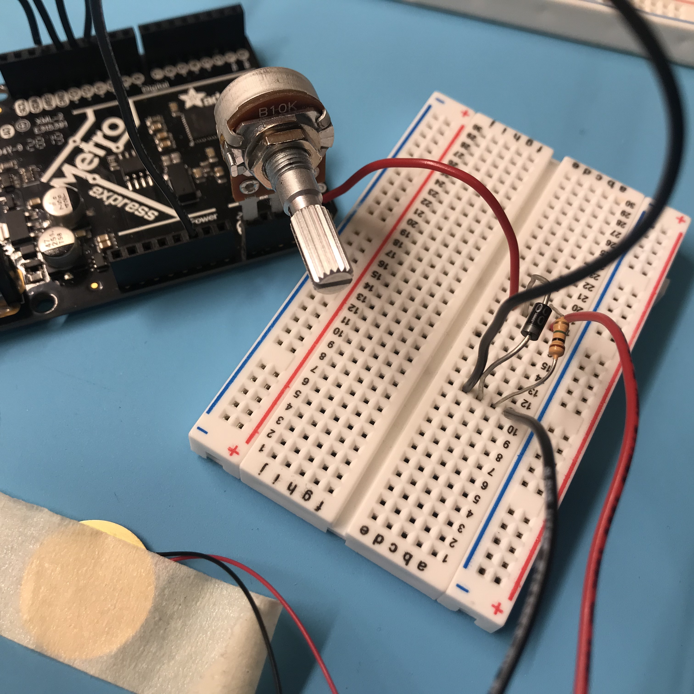
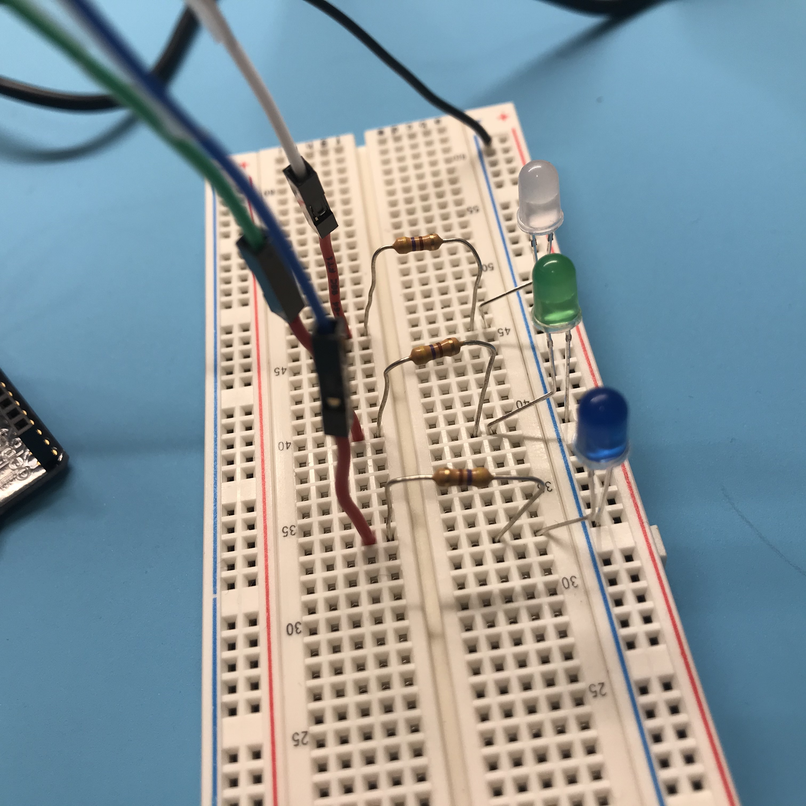
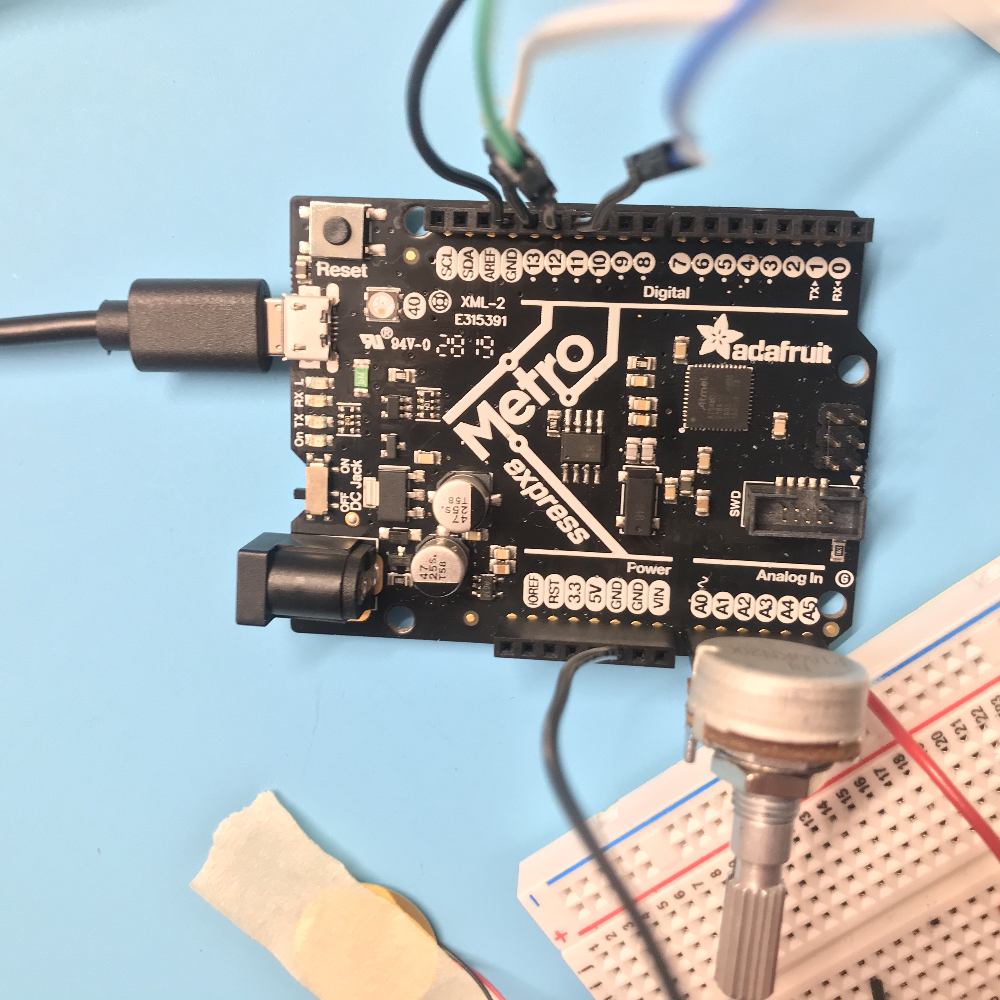

Week 04: Microcontroller Programming
The Idea
Here's a creepy pager commercial from the 90s
For this week’s assignment I considered building on Week 3, but I realized that what I would want to program with Arduino would be simple compared to the amount of work I would need to do to reconstruct the movement mechanism for the kinetic sculpture. So, I decided to go in a different direction.
My husband had been asking me for an “on air” switch that we could use to let the other person know when we were on a zoom call (our desks abut one another in our tiny apartment). This also, really did not require any programming. So instead he suggested a pager, so I could indicate to him when I needed something based on different LED patterns. I thought it would be cool to add an “urgency” indicator, where the speed of the blinking LEDs would increase or decrease based on adjustments made to a potentiometer.
I’m curious if I can use the piezo sensor as a kind of button, to indicate when the lights should come on or off, and which lights should illuminate.
The Basic LED Blinking Circuit
First, I decided I’d figure out how to control the blink of a single LED with a pot. I knew that the value of the potentiometer would be controlling the value of the delay between commands to turn the LED on and off. The LED commands would be digitalWrite() functions but the pot would be using an analogRead() function. This actually turned out to be very simple. After perusing the beginning of the Arduino Project Book and doing some Arduino googling, I found some basic code for linking a pot to the speed of the LED blink.
I made a simple LED circuit using a 470 Ohm resistor to start and was able to successfully get my LED to blink.
Adding the Pot
Now to incorporate the potentiometer. I took a look at the example code for controlling a motor with a pot and followed some of those directions for the microcontroller and board set up. I then borrowed the setup commands for the pot and then changed the formula to be about the delay. And it worked!
int led = 13; // the pin the LED is connected to
void setup() {
pinMode(led, OUTPUT); // Declare the LED as an output
pinMode(A0, OUTPUT); //This will be GND for the potentiometer
pinMode(A4, OUTPUT); //This will be 3.3V for the pot.
digitalWrite(A0, LOW);
digitalWrite(A4, HIGH);
digitalWrite(led, LOW); // start with the LED off
}
void loop() {
int pot_value = analogRead(A2); // pot wiper is on A2
int delay_level = map(pot_value, 0, 1023, 2000, 0); // map motor level to delay period
digitalWrite(led, HIGH); // Turn the LED on
delay(delay_level); // wait for a time dependent on the pot level
digitalWrite(led, LOW); //Turn the LED off
delay(delay_level); // wait for a time dependent on the pot level
}
}
Adding more LEDs
Now I set up three different LEDs and connected them to three different buttons. This worked without changing any code at all.
The Piezo Disc



This last step proved to be the most difficult. I wanted to try and use a Piezo disc instead of buttons to control which LEDs turned on. First I set up each of my LEDs onto different pins.
const int piezoSensor = A5; // analog pin in piezo is connected to
int sensorReading = 0; //variable to store value read from sensor
int led = 13; // the pin the LED is connected to
void setup() {
pinMode(led, OUTPUT); // Declare the LED as an output
pinMode(A0, OUTPUT); //This will be GND for the potentiometer
pinMode(A4, OUTPUT); //This will be 3.3V for the pot.
digitalWrite(A0, LOW);
digitalWrite(A4, HIGH);
digitalWrite(led, LOW); // start with the LED off
Serial.begin(9600); //start serial monitor window
}
void loop() {
sensorReading = analogRead(piezoSensor);
Serial.println(sensorReading);
if(sensorReading > 0 && sensorReading <=100) {
int pot_value = analogRead(A2); // pot wiper is on A2
int delay_level = map(pot_value, 0, 1023, 2000, 0); // map motor level to delay period
digitalWrite(led, HIGH); // Turn the LED on
delay(delay_level); // wait for a time dependent on the pot level
digitalWrite(led, LOW); //Turn the LED off
delay(delay_level); // wait for a time dependent on the pot level
delay(10);
}
else {
digitalWrite(led, LOW); //Turn LED off
delay(10);
}
}
I explored a few different tutorials including this one for basic Knock sensing and this code for controlling an LED strip with a piezo disc. I was already using my A0-A4 pins for the pot, so I used the A5 pin for my piezo disc along with a 1M ohm resistor. At first, I set this up wrong. (Later, I realized this and added a diode. I wrote the code to respond to different thresholds of vibration.
This seemed to work but the piezo sensor was very very sensitive...so I tried modifying the thresholds and that sort of worked a little better. (note in the video below, my piezo sensor is hooked up strangely.... I later adjusted this based on the tutorial I mentioned above.)
I still wanted to incorporate a sequence of knocks however to signal which LED should turn on. I used a combination of code from this secret knock tutorial and this LED knock puzzle tutorial. The code was starting to get complicated and though I think I finally figured out the correct commands...it wasn't translating into the circuit. I then tried to go back and retest my original threshold code and that didn't work either, which is drawing me to conclude that I may have damaged my piezo sensor? ::crying::